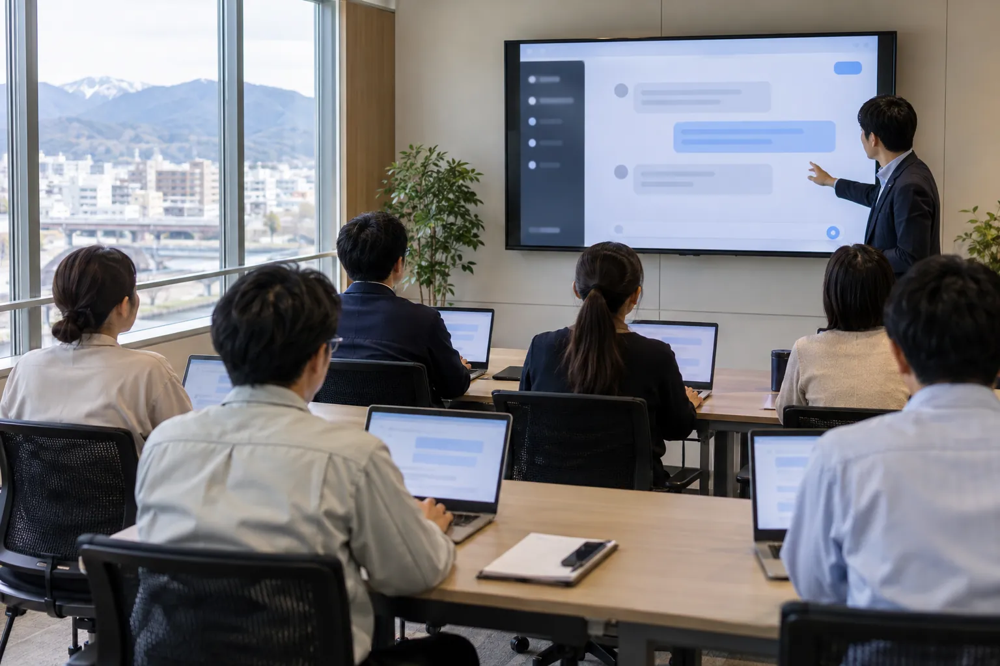

01 ／ Training
現場AI研修
明日から、自分の仕事でAIが動く。
AIエージェントを自社の業務に合わせて使いこなす、3日間・15時間の実務研修です。題材は御社の実際の仕事。社内のAI推進担当と、各職務の実務者を育てます。
DETAIL現場AI研修のページへ
FUKUI, JAPAN36.06°N ／ 136.22°E
研修制作みぎ腕
研修も、制作も、現場の推進も。福井の会社のAI活用を、地元でまとめて引き受けます。
AI よろづやは、福井の会社のAI活用を、共に前に進めるサービスです。
研修・制作・現場の推進。必要なところから、まとめて引き受けます。
01 ／ Training
明日から、自分の仕事でAIが動く。
AIエージェントを自社の業務に合わせて使いこなす、3日間・15時間の実務研修です。題材は御社の実際の仕事。社内のAI推進担当と、各職務の実務者を育てます。
DETAIL現場AI研修のページへ
02 ／ Production
専門の仕事を、まるごとおまかせ。
動画も、ホームページも、業務のシステムも。これまで専門の会社に頼んでいた作業を、AIを使って短い期間で仕上げます。たたき台が早く出るので、見ながら直せます。
DETAILAIおまかせ制作のページへ03 ／ Partner
現場のAI化を、隣で一緒に進める。
AXは、AIを使って仕事の進め方そのものを変えることです。月額で会社に入り、業務の棚卸しから仕組みづくり、現場への定着まで、横で一緒に進めます。
DETAILAXのみぎ腕のページへ仕事ごとに、AIの担当者がいます。
BWHの仕事の下ごしらえと制作は、職能ごとに役割を分けたAIの担当者が受け持ちます。お客様との窓口と、判断・最後の確認は代表の静木が行います。
※「AI社員」はAIの担当者です。人物の絵は、AIで作ったイメージです。「使うAI」は2026年10月時点の主な道具で、案件ごとに最適なものを選びます。
#01
MARUOKA JOH
戦略・事業のコンサルタント
市場や競合を調べ、事業計画の骨組みと数字の筋道を組み立てます。
使うAI
#02
ASUWA SAKURA
組織・人事のコンサルタント
評価の基準や行動指針、面談の記録を整理し、制度の案と運用の手順にまとめます。
使うAI
#03
KUZURYU SORA
AX推進のコンサルタント
業務を棚卸しして任せる仕事を選び、手順書や社内向けのAIの仕組みを作ります。
使うAI
#04
ICHIJODANI AYA
研修の担当
受講する方の職務に合わせて、研修の流れ・投影資料・演習の題材を用意します。
使うAI
#05
MIKUNI HANABI
動画の担当
台本を書き、映像の生成と編集で、紹介動画や教材の動画を仕上げます。
使うAI
#06
WAKASA NAMI
音声動画の担当
ナレーションや対談の声をAIで作り、スライドや映像と合わせて仕上げます。
使うAI
#07
SABAE REN
ホームページの担当
構成と文章を組み、写真や図をそろえて、ホームページやLPを作ります。
使うAI
#08
KATSUYAMA RYU
Webシステムの担当
業務アプリや申し込みの管理画面を作り、公開と保守まで受け持ちます。
使うAI
#09
IMADATE SUMI
資料づくりの担当
要件を読み込み、図や表を入れた提案書や発表資料に組み立てます。
使うAI
#10
ONO YUI
ブンショの担当
マニュアル・記事・原稿を書き、日本語の検査を通してから人の目で仕上げます。
使うAI
何が課題で、何を使って、何ができるか。
サービスごとに、お客様との仕事（事例）と、AIの技術でできること（活用例）を載せています。
公式の発表や報道から、福井の会社の参考になるAI活用の事例を選んでいます。
3つのサービスとも、都度お見積もりです。やりたいことと期限を伺い、作業の量に合わせて金額をお出しします。
はい。研修では、アカウントの作り方から一緒に進めます。作業だけを頼む場合は、AIの知識がなくても大丈夫です。
AIを使って、仕事の進め方そのものを変えることです。道具を入れるだけでなく、誰が何をどう進めるかまで見直します。「AXのみぎ腕」は、その取り組みを月額で一緒に進めるサービスです。
最初に、AIに入れてよい情報と入れない情報の線を引きます。入力した内容をAIの学習に使わせない設定など、ツールの設定もあわせて確認します。
提携の社会保険労務士にご相談いただけます。対象になるかどうかは研修の中身や会社の条件で変わるため、社労士と一緒に確認します。
それで大丈夫です。困っている作業を、そのまま話してください。どのサービスが合うかは、こちらから提案します。
Contact
相談はフォームから受け付けています。内容を読んで、こちらからご連絡します。